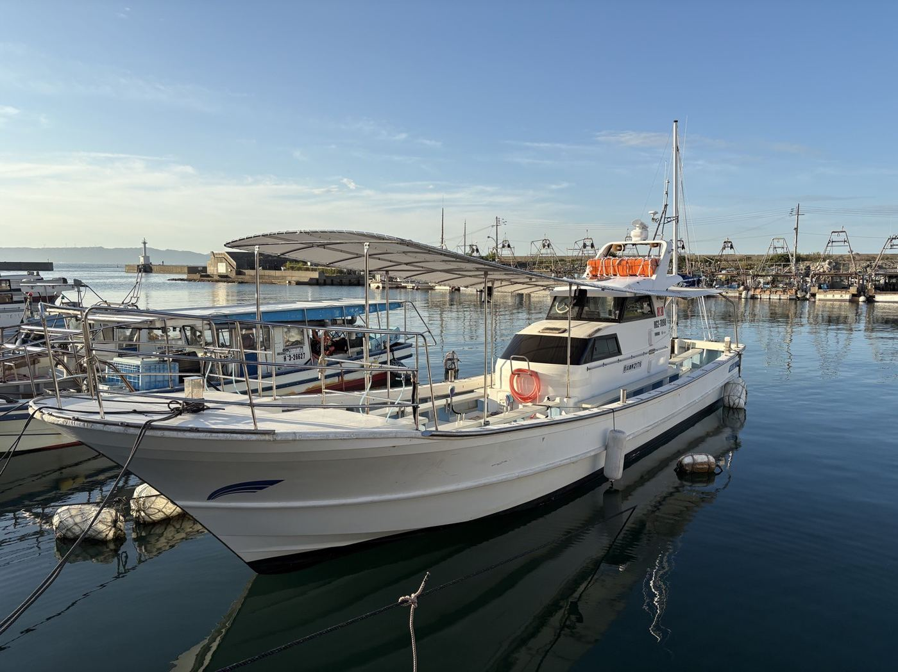
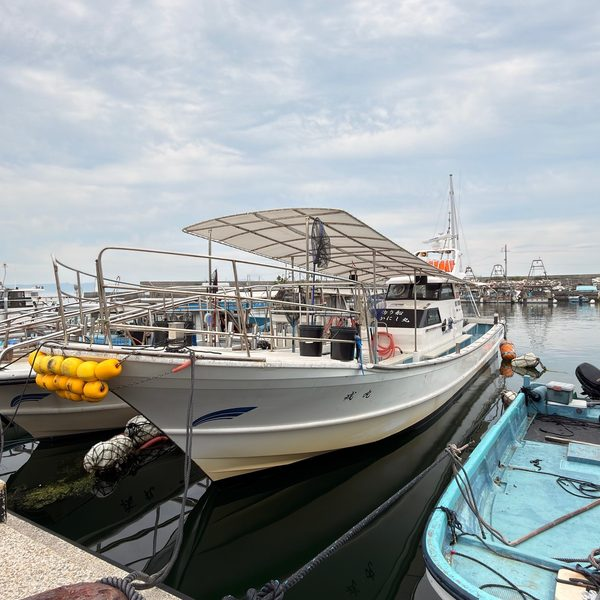
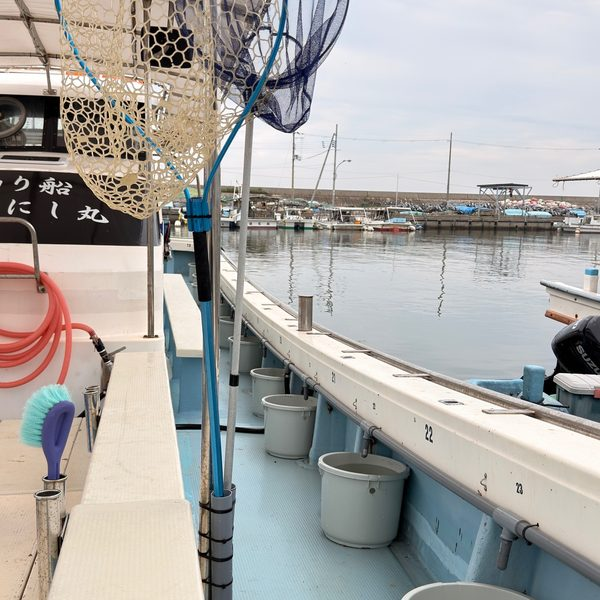
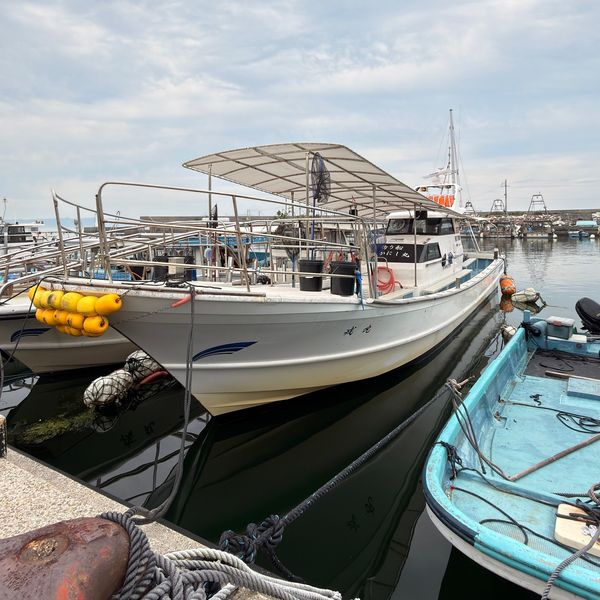
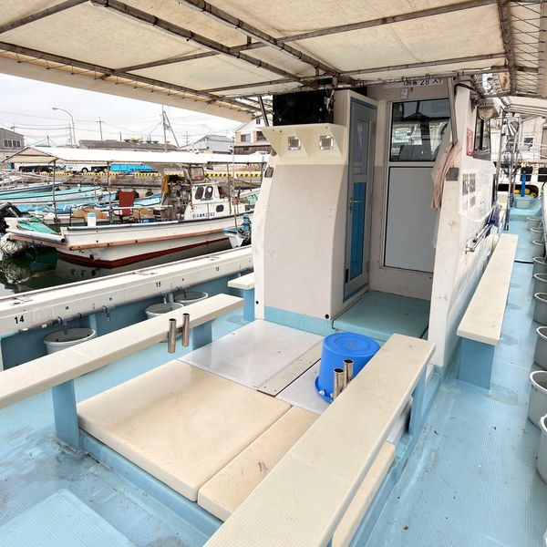
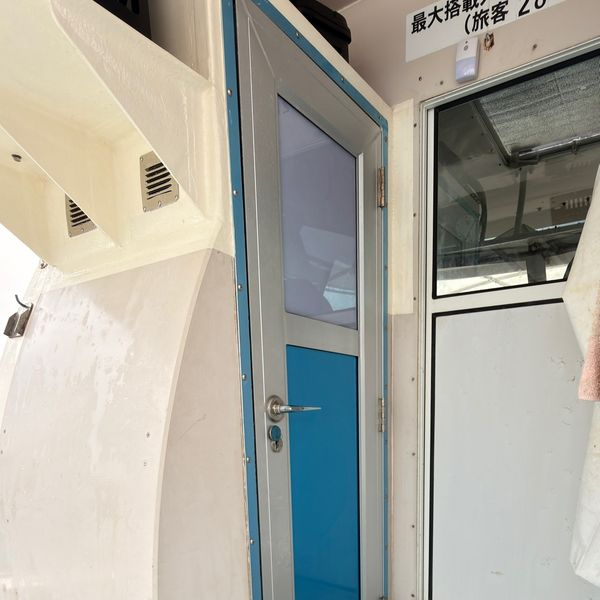
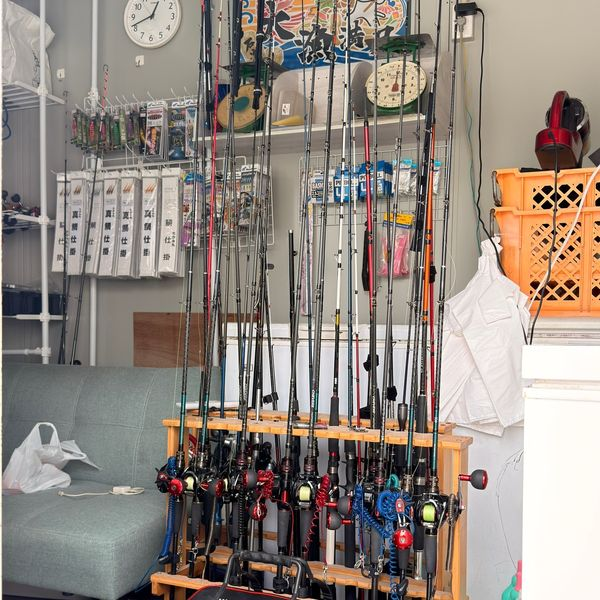
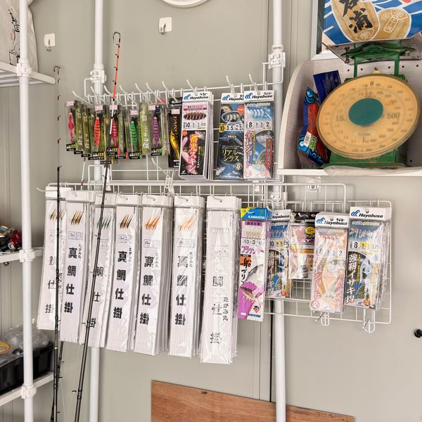
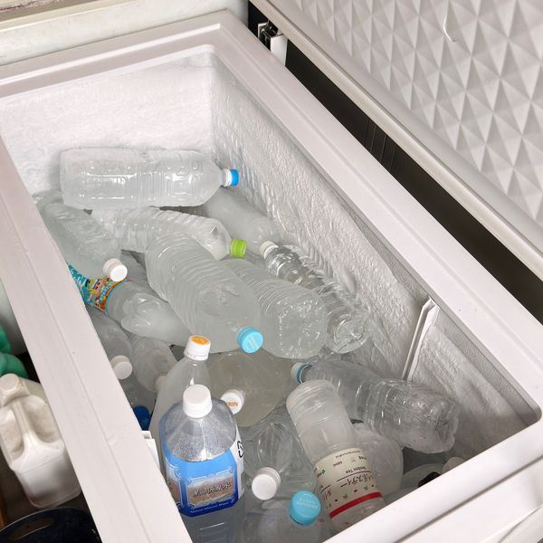
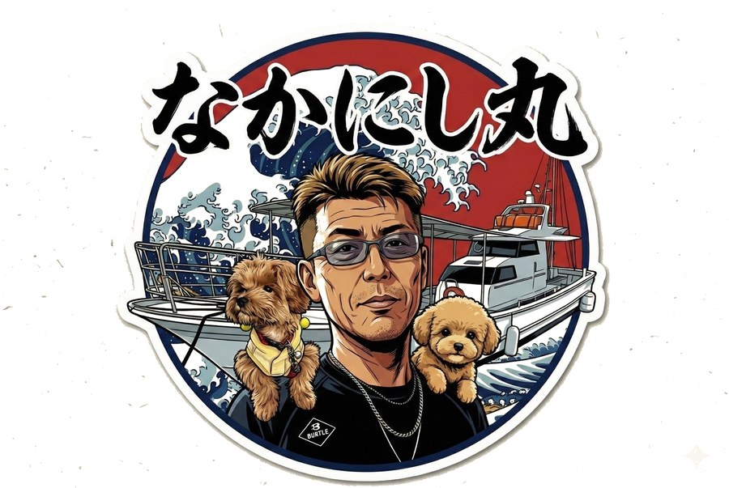

🐙 毎日更新中｜出航のたびに釣果を投稿
「マダコ◯杯！」「本日も好調！」など、リアルタイムでお届けしています。
▶ @nakanishi_maru
📷 Instagramで釣果を見る
最新の釣果は Instagram で毎日更新中。
●緑の日をタップすると予約フォームが開きます。
明石海峡タコ釣りの専門船として、毎朝江井ヶ島港から出航しています。

初めての方も快適に過ごせる設備が揃っています。

ゆったりしたスペースで快適に釣りを楽しめます。グループでも安心の大型船です。

釣ったタコを活かす個別イケス付き。タモも完備しているので手ぶらでOK。


日差しや小雨を防ぐ屋根付き。広々した船内で夏でも快適に釣りを楽しめます。

船内にトイレあり。長時間でも安心。女性のお客様にも好評です。

ロッド・リールのレンタルが充実。手ぶらでも参加OKです。

タコエギや仕掛けを船で購入できます。忘れてしまっても安心です。

凍ったペットボトルをご用意。釣ったタコも飲み物も冷たいまま持ち帰れます。
明石・江井ヶ島の海を知り尽くした船長がご案内します。

明石・江井ヶ島の海とともに歩んできた地元の船長。明石海峡の複雑な潮流と岩礁帯のポイントを知り尽くし、その日の潮を読んで、良型マダコが潜むポイントへご案内します。
「初心者の方こそ大歓迎です。タコが乗った瞬間のあの重み、ぜひ一度味わってください。釣り方は船の上でいくらでも教えます」
仕掛けの使い方から合わせのタイミングまで、船長自らサポート。初めての方も、手ぶらの方も、安心してご乗船ください。
シンプルな料金体系。追加料金なし。
明石市の西部、江井ヶ島港から出航。無料駐車場完備。
ご乗船前に、下記の点をご確認ください。
①エギ・スッテの数
使用できるのは合計2個まで。3個以上の連結は禁止です。竿に付けるアームや集魚アイテムもエギ1本としてカウントするため、シンプルな仕掛けでお願いします。
②針（フック）の形状
180度の半傘タイプ・1段針のみ使用可。多段針・多軸フックは禁止（2段・3段針も禁止）。針はバーブレス（カエシなし）をご使用ください。2026年は5本針まで使用可ですが、2027年以降は4本針までに変更される可能性があります。
③エサ・ワームの使用
エサ（イワシ・サンマ・貝類・カニエキス・バター等）の使用は禁止です。ワームに元から付いている香りはOKです。集魚スプレー・スタンプ等の使用については、乗船時に船長へご確認ください。
明石・江井ヶ島港でのタコ釣りについて、よくいただく質問をまとめました。
はじめての方へ。明石のタコ釣りの基礎知識をまとめました。
明石海峡の速い潮にもまれて育つマダコは、身が締まり、味と歯ごたえが格別。全国にその名が知られるブランドダコです。エサとなる豊富なエビ・カニを食べて育つため、旨みが濃いのが特徴。江井ヶ島沖は、その明石ダコが狙える好漁場のひとつです。
明石のマダコ釣りは6月〜8月末の夏が最盛期。水温が上がるこの時期は数・サイズともに期待でき、新子（その年生まれの小ダコ）から良型まで楽しめます。なかにし丸もこのシーズン中は木曜定休で運航しています。平日は比較的空きが多く、ゆったり釣りたい方におすすめです。
道具がなくても大丈夫。ロッド・リールはレンタル（¥2,000）があり、手ぶらでも参加できます。あると便利なのは、日焼け対策（帽子・日焼け止め）、滑りにくい靴、飲み物、クーラーボックス、釣ったタコを入れる洗濯ネット（チャック付き）。ライフジャケットは無料で貸し出します。
明石のタコ釣りは、タコエギ（またはスッテ）を海底まで沈め、底をトントンと叩くように誘って乗せるのが基本です。オモリは50号、ラインはPE2号が標準。タコが乗ったら一気に巻き上げます。仕掛けの使い方・底の取り方・合わせのタイミングは、船長が船上で丁寧にお教えしますので、初めての方もご安心ください。
マダコ資源を守るため、明石エリア共通のルール（エギ・スッテは2個まで、針はバーブレスの1段針のみ、エサの使用禁止など）が定められています。詳しくはこのページの「注意事項とお願い」をご確認ください。仕掛けは船長が船上でご案内します。
なかにし丸は、江井ヶ島港から出船するタコ釣り専門の遊漁船です。乗船料は¥8,000、駐車場は無料で、追加料金はありません。ロッドレンタルもあるので手ぶらでOK。ご予約は公式LINEから24時間受付、このページのカレンダーからも空き状況を確認して予約できます。明石海峡を望む港で、本場のタコ釣りを体験してみませんか。